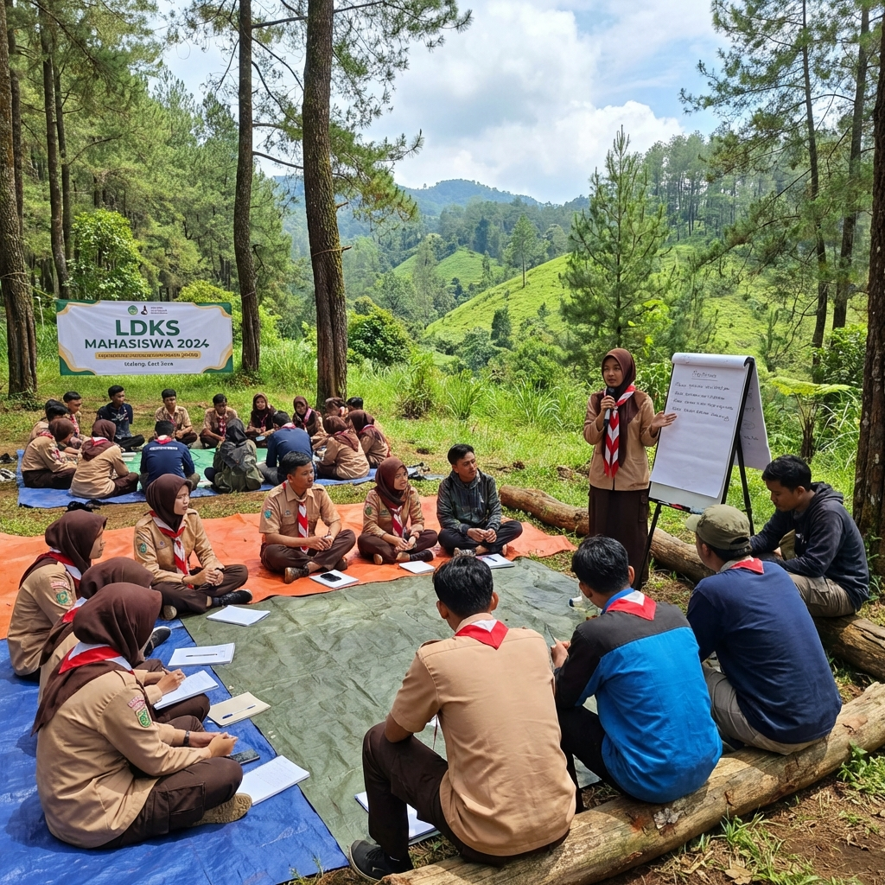
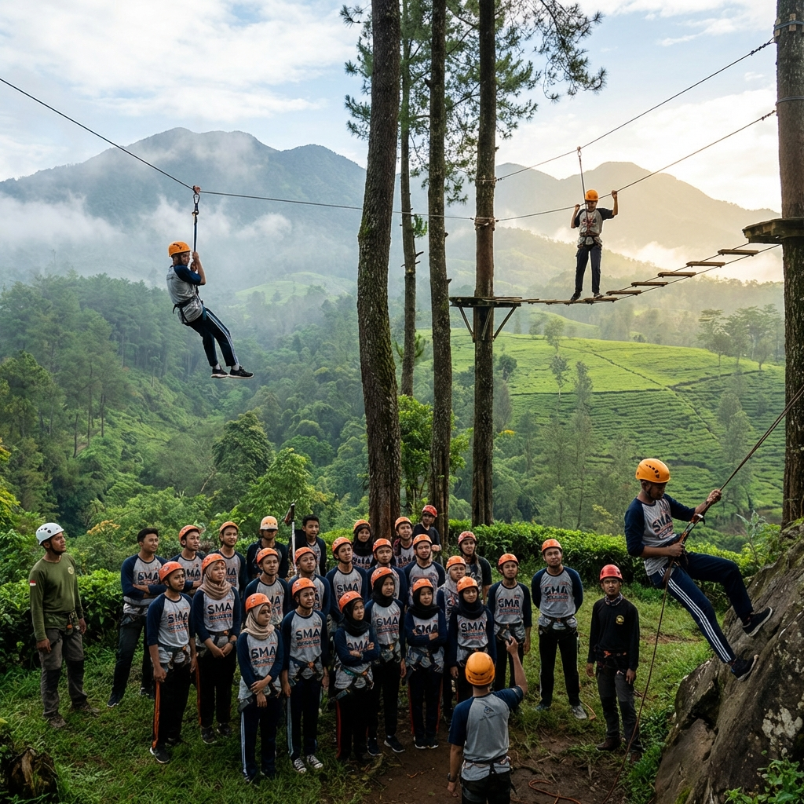

Latihan Dasar Kepemimpinan Siswa (LDKS) merupakan salah satu program yang paling penting dalam dunia pendidikan di Indonesia. Program ini bukan sekadar kegiatan seremonial atau formalitas belaka, melainkan fondasi pembentukan karakter dan jiwa kepemimpinan bagi generasi muda yang kelak akan menjadi pemimpin bangsa. Dalam era globalisasi yang penuh tantangan ini, Indonesia membutuhkan pemimpin-pemimpin muda yang tangguh, berintegritas, dan memiliki kemampuan memimpin yang terlatih sejak dini.
LDKS biasanya dilaksanakan sebagai bagian dari program kegiatan OSIS (Organisasi Siswa Intra Sekolah) di tingkat SMP dan SMA. Melalui LDKS, siswa diperkenalkan dengan konsep kepemimpinan dasar, etika organisasi, manajemen waktu, public speaking, dan berbagai keterampilan esensial lainnya yang akan menjadi bekal berharga dalam perjalanan hidup mereka ke depan. Mari kita telusuri lebih dalam mengapa LDKS begitu penting dan bagaimana program ini berperan dalam mencetak pemimpin muda berkualitas.
Sejarah dan Perkembangan LDKS di Indonesia
LDKS mulai dikenal secara luas di lingkungan sekolah-sekolah Indonesia sejak era 1990-an, seiring dengan berkembangnya kesadaran tentang pentingnya pendidikan karakter di luar kurikulum akademik formal. Awalnya, LDKS hanya berupa seminar dan pelatihan indoor sederhana yang membahas tentang struktur organisasi dan tata kelola OSIS. Namun seiring waktu, format LDKS berkembang menjadi lebih komprehensif dan dinamis.
Saat ini, LDKS modern menggabungkan berbagai metode pembelajaran termasuk outbound training, simulasi kepemimpinan, workshop interaktif, dan studi kasus yang relevan dengan kehidupan remaja. Perkembangan ini menunjukkan bahwa pendidikan kepemimpinan terus beradaptasi dengan kebutuhan zaman dan karakteristik generasi baru yang lebih dinamis dan tech-savvy.
Tujuan Utama LDKS yang Perlu Dipahami
LDKS memiliki beberapa tujuan utama yang saling terkait dan mendukung satu sama lain. Memahami tujuan-tujuan ini penting agar pelaksanaan LDKS bisa terarah dan memberikan hasil yang maksimal bagi setiap peserta.
Membentuk Karakter Kepemimpinan
Tujuan paling fundamental dari LDKS adalah membentuk karakter kepemimpinan pada diri setiap siswa. Ini mencakup pengembangan sifat-sifat mulia seperti tanggung jawab, kejujuran, keadilan, empati, dan keberanian untuk mengambil keputusan. Melalui berbagai kegiatan yang dirancang secara khusus, siswa dilatih untuk menunjukkan kualitas-kualitas kepemimpinan ini dalam situasi nyata, bukan hanya memahaminya secara teoritis di dalam kelas.
Meningkatkan Kemampuan Manajerial
LDKS juga bertujuan untuk membekali siswa dengan kemampuan manajerial dasar yang diperlukan dalam mengelola organisasi. Ini meliputi perencanaan program kerja, pengorganisasian kegiatan, pelaksanaan program, dan evaluasi hasil. Kemampuan manajerial yang dipelajari dalam konteks OSIS ini menjadi latihan awal yang sangat berharga sebelum siswa memasuki dunia perkuliahan dan dunia kerja kelak.
"LDKS bukan sekadar pelatihan untuk pengurus OSIS, tetapi investasi jangka panjang dalam pembentukan karakter generasi penerus bangsa. Setiap siswa yang mengikuti LDKS dengan sungguh-sungguh akan menuai manfaatnya sepanjang hidup." — Pakar Pendidikan Karakter Indonesia
Aspek-Aspek Kepemimpinan yang Dikembangkan melalui LDKS
LDKS yang dirancang dengan baik akan menyentuh berbagai aspek kepemimpinan yang komprehensif. Setiap aspek memiliki peran penting dalam membentuk sosok pemimpin yang utuh dan mampu menghadapi berbagai tantangan di masa depan.
Kemampuan Public Speaking dan Komunikasi
Salah satu aspek kepemimpinan yang paling penting adalah kemampuan berkomunikasi di depan umum. Dalam LDKS, siswa diberikan kesempatan untuk berlatih berbicara di depan audiens, mempresentasikan ide, memimpin diskusi, dan menyampaikan pendapat secara argumentatif. Latihan ini sangat berharga mengingat banyak orang dewasa sekalipun masih merasa kesulitan dan gugup ketika harus berbicara di depan umum.
Kemampuan public speaking yang diasah sejak masa SMP dan SMA akan menjadi modal berharga dalam karir masa depan. Pemimpin yang mampu berkomunikasi dengan baik akan lebih efektif dalam menginspirasi, memotivasi, dan mengarahkan timnya untuk mencapai tujuan bersama.
Kemampuan Problem Solving dan Pengambilan Keputusan
LDKS melatih siswa untuk berpikir kritis dan mengambil keputusan secara cepat dan tepat. Melalui simulasi dan studi kasus, siswa dihadapkan pada berbagai permasalahan yang harus mereka pecahkan dengan sumber daya dan waktu yang terbatas. Proses ini mengasah kemampuan analitis, kreativitas, dan keberanian untuk mengambil keputusan meskipun dalam ketidakpastian.
Kemampuan problem solving yang dikembangkan melalui LDKS tidak hanya berguna dalam konteks organisasi, tetapi juga dalam kehidupan akademik dan pribadi siswa. Siswa yang terbiasa menganalisis masalah dan mencari solusi kreatif cenderung lebih mampu menghadapi berbagai tantangan yang datang dalam kehidupan sehari-hari mereka.

Peran Outbound dalam Meningkatkan Efektivitas LDKS
Integrasi kegiatan outbound dalam program LDKS telah terbukti secara signifikan meningkatkan efektivitas pelatihan kepemimpinan siswa. Outbound memberikan dimensi experiential learning yang tidak bisa diperoleh dari metode pelatihan konvensional di dalam ruangan. Melalui tantangan fisik dan permainan strategis di alam terbuka, siswa mendapatkan pengalaman langsung yang jauh lebih berkesan dan bermakna.
Ketika siswa harus memimpin timnya menyelesaikan obstacle course atau merancang strategi untuk memenangkan kompetisi antar kelompok, mereka secara tidak sadar mempraktikkan seluruh teori kepemimpinan yang telah dipelajari dalam sesi indoor. Proses transfer pengetahuan dari teori ke praktik ini terjadi secara alami dan efektif, membuat pembelajaran lebih mendalam dan bertahan lama di ingatan peserta.
Dampak Jangka Panjang LDKS bagi Generasi Muda
Penelitian menunjukkan bahwa siswa yang aktif mengikuti LDKS dan kegiatan organisasi sekolah memiliki peluang lebih besar untuk sukses di perguruan tinggi dan karir profesional. Soft skill yang dikembangkan melalui LDKS — seperti kepemimpinan, komunikasi, kerja sama tim, dan manajemen waktu — menjadi pembeda utama di dunia kerja modern dimana kemampuan teknis saja tidak lagi cukup untuk meraih kesuksesan.
Banyak tokoh pemimpin Indonesia yang mengakui bahwa pengalaman mereka dalam organisasi siswa dan kegiatan LDKS selama masa SMP dan SMA menjadi fondasi yang sangat kuat bagi karir kepemimpinan mereka. Kebiasaan berorganisasi, kemampuan mengelola tim, dan ketahanan mental yang terbentuk sejak masa remaja menjadi modal yang tak ternilai ketika mereka menghadapi tantangan kepemimpinan yang lebih besar di kemudian hari.
LDKS Modern: Adaptasi dengan Kebutuhan Generasi Z
Generasi Z yang tumbuh di era digital memiliki karakteristik dan kebutuhan yang berbeda dari generasi sebelumnya. Program LDKS modern perlu beradaptasi dengan memadukan metode konvensional dengan pendekatan yang lebih relevan bagi generasi digital native. Ini termasuk penggunaan teknologi dalam proses pembelajaran, gamifikasi kegiatan, dan pembahasan isu-isu kontemporer yang dekat dengan kehidupan remaja saat ini.
Selain itu, LDKS modern juga perlu membahas tentang kepemimpinan digital, literasi media sosial, dan etika dalam dunia maya. Di era dimana setiap siswa memiliki platform digital untuk menyuarakan pendapat, kemampuan memimpin opini publik secara bijak dan bertanggung jawab menjadi keterampilan yang sangat penting dan harus mulai diajarkan sejak dini melalui program LDKS yang progresif.

Tips Melaksanakan LDKS yang Efektif dan Berkesan
Agar LDKS memberikan dampak maksimal, ada beberapa tips yang perlu diperhatikan dalam pelaksanaannya. Pertama, pastikan program LDKS memiliki tujuan yang jelas dan terukur. Setiap kegiatan harus dikaitkan dengan kompetensi kepemimpinan yang ingin dicapai. Kedua, gunakan metode pembelajaran yang variatif agar peserta tidak bosan, termasuk outbound, diskusi kelompok, role playing, dan studi kasus.
Ketiga, libatkan trainer atau fasilitator yang berpengalaman dan memahami psikologi remaja. Trainer yang baik mampu menciptakan suasana yang kondusif untuk pembelajaran sekaligus menyenangkan bagi peserta. Keempat, sediakan waktu yang cukup untuk refleksi dan evaluasi di setiap sesi agar peserta benar-benar bisa mengambil pelajaran dari setiap pengalaman yang mereka lalui.
Kelima, dokumentasikan seluruh kegiatan LDKS dengan baik sebagai bahan evaluasi dan portofolio kegiatan sekolah. Dokumentasi yang lengkap juga berguna sebagai motivasi bagi calon peserta LDKS di tahun-tahun berikutnya. Terakhir, lakukan follow-up pasca kegiatan untuk memastikan bahwa ilmu dan pengalaman yang didapat selama LDKS benar-benar diterapkan dalam kehidupan berorganisasi di sekolah.
Pertanyaan yang Sering Diajukan (FAQ)
Kesimpulan
LDKS memegang peran vital dalam membentuk pemimpin muda Indonesia yang berkualitas. Program ini memberikan fondasi yang kokoh berupa karakter kepemimpinan, kemampuan manajerial, keterampilan komunikasi, dan ketahanan mental yang akan terus bermanfaat sepanjang hidup peserta. Dengan integrasi kegiatan outbound, LDKS menjadi semakin efektif karena memberikan pengalaman belajar yang komprehensif dan berkesan.
Investasi dalam program LDKS yang berkualitas adalah investasi dalam masa depan bangsa. Setiap sekolah hendaknya memberikan perhatian serius terhadap pelaksanaan LDKS dan memastikan program ini berjalan secara optimal dengan dukungan trainer profesional dan fasilitas yang memadai.
Ingin menyelenggarakan LDKS yang luar biasa untuk sekolah Anda? Hubungi kami sekarang untuk konsultasi dan penawaran terbaik!